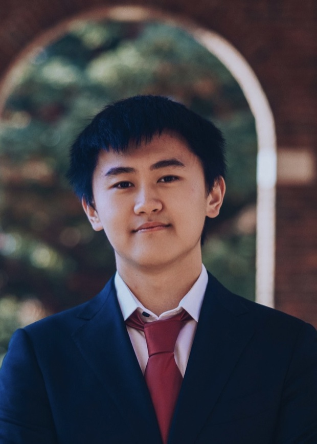

I love singing
I'm a bass in the JHU Vocal Chords, our a cappella group, where I serve as Business Manager. I can reach a low D2, and on a good day a C♯2.
3rd place, ICCA Quarterfinals20242026

I'm a senior at Johns Hopkins University studying Computer Science and Applied Mathematics & Statistics, and pursuing a combined M.S.E. in Data Science. I'm fortunate to be advised by Daniel Khashabi, Philipp Koehn, and Jaemin Cho.
I am interested in Natural Language Processing and Multimodal Intelligence, with a focus on making models reliable. My research asks: when a model tells us something, can we trust it and verify it? A model should be , , and . I study these properties in attributed generation, over scientific tables, under temporal shift, and across modalities, via rigorous evaluation, post-training, and neuro-symbolic methods. Ultimately, I aim to help people use AI in research, decision-making, and creative work with understanding and trust.
COLM 2026Scientific reasoning · Structured data · Faithful execution
Frontier models struggle with scientific table QA primarily at execution, not strategy: even when given a correct step-by-step plan, they often fail to carry it out faithfully.
NeurIPS 2026 Workshop on Long-Context Foundation ModelsGrounded generation · Verifiability · Evaluation
Finer citations are not always better: across models from 8B to 120B, enforcing sentence-level citations can lower measured attribution quality by a median of 40%, with little gain in correctness.
I'm a bass in the JHU Vocal Chords, our a cappella group, where I serve as Business Manager. I can reach a low D2, and on a good day a C♯2.